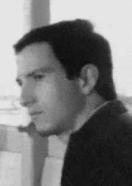

Eduardo
Antônio
da Fonseca
CIRCUNSTÂNCIAS DA MORTE
Eduardo foi preso em uma emboscada no dia 23 de setembro de 1971, quando se encontrava com outros militantes da ALN – Antônio Sérgio de Mattos, Manoel José Nunes Mendes Abreu, Ana Maria Nacinovic Corrêa – no bairro do Sumarezinho, em São Paulo. Apenas a guerrilheira Ana Maria Nacinovic conseguiu escapar sem ser presa, vindo a ser assassinada posteriormente, no dia 14 de junho de 1972. Os órgãos da repressão colocaram na rua um jipe do Exército, aparentemente com problemas, estando os soldados parados à volta portando metralhadoras. Os agentes do DOI-CODI/SP ficaram escondidos em um caminhão baú do jornal Folha de São Paulo. Do ardil resultou a morte de três dos quatro militantes, incluindo Antônio Sérgio de Mattos. Ana Maria Nacinovic Corrêa conseguiu escapar sem ser presa, sendo morta no ano seguinte, em 14 de junho de 1972. A versão oficial registrou que os três militantes morreram no local, ao tentar assaltar o jipe. As requisições de exame necroscópico ao IML foram assinadas pelo delegado do DOPS/SP, Alcides Cintra Bueno Filho, e os laudos necroscópicos pelos legistas Isaac Abramovitc e Antônio Valentini. Esses documentos já apresentam contradições em relação à versão oficial de morte tendo em vista a diferença de horário que teriam sido encontradas as vítimas: Antônio Sérgio e Manoel Mendes teriam sido encontrados mortos às 16 horas, enquanto Eduardo, às 15 horas. Os corpos dos três deram entrada no Instituto Médico-Legal (IML) às 18h40min, apesar de o local do tiroteio ser muito próximo à sede do IML. Deve-se registrar que não foi realizada perícia no local, tendo Suzana Keniger Lisbôa afirmado na 117ª audiência da Comissão da Verdade do Estado de São Paulo “Rubens Paiva”, no dia 19 de março de 2014, que houve […] uma emboscada em que os órgãos de segurança se prepararam para matar, eles se organizaram para matar. E fica mais estranho ainda saber que eles não tenham feito isso de forma contínua, realizando, por exemplo, a perícia de local, mostrando as armas nas mãos de cada um dos militantes […]. A descrição dos ferimentos no laudo do Instituto Médico-Legal (IML) também não entra em acordo com a versão de morte em tiroteio e algumas equimoses e edemas perceptíveis nas fotos não foram descritas. Apesar de o laudo de Eduardo identificar dois tiros na região glútea e dois na perna, eles não foram apontados como ferimentos capazes de provocar morte imediata, mas apenas imobilizá-lo. Suzana Keniger Lisboa, na 117ª audiência da Comissão da Verdade do Estado de São Paulo Rubens Paiva, no dia 19 de março de 2014 asseverou que: o laudo de necropsia descreve quatro tiros nos órgãos inferiores. Ele tem um ferimento no sulco glúteo esquerdo, que depois de fraturar o fêmur e provocar ferimento na artéria femoral, saiu no anteromedial, saiu na coxa esquerda, na parte medial da coxa esquerda. Ele tem escoriações que são mostradas – inclusive uma provocada por raspão de projétil de arma de fogo, mas que a gente não tem foto para ver, que é na fossa ilíaca – tem um ferimento na perna esquerda e tem outro no glúteo direito que transfixou o rim e saiu na região lombar. Tem também contusão no terço superior da perna direita. Segundo, na época, as informações que a gente teve de análise rápida dos legistas, nenhum desses tiros poderia ter causado a morte imediata, a não ser que tenha havido realmente a omissão de socorro. […] Ele teve dois tiros na região glútea e dois nas pernas. Então, esses disparos já imobilizaram, impedindo a fuga, ou ele foi retirado dali e foi levado para algum lugar, ou não se sabe. O laudo de Antônio Sérgio e de Manoel José também dá margem a questionamentos. Contudo, não foram encontrados dados mais contundentes que confirmem com precisão onde os militantes teriam morrido. Apesar disso, a família de Eduardo conseguiu sepultá-lo no Cemitério São Pedro, no dia 30 de outubro de 1971.
Eduardo was arrested in an ambush on September 23, 1971, when he met with other ALN militants – Antônio Sérgio de Mattos, Manoel José Nunes Mendes Abreu, Ana Maria Nacinovic Corrêa – in the Sumarezinho neighborhood, in São Paulo. Only the guerrilla Ana Maria Nacinovic managed to escape without being arrested, and was later murdered, on June 14, 1972. The repression bodies put an Army jeep on the street, apparently in trouble, with soldiers standing around carrying machine guns. DOI-CODI/SP agents were hidden in a box truck belonging to the newspaper Folha de São Paulo. The ruse resulted in the death of three of the four militants, including Antônio Sérgio de Mattos. Ana Maria Nacinovic Corrêa managed to escape without being arrested, being killed the following year, on June 14, 1972. The official version recorded that the three militants died on the spot, when trying to rob the jeep. The necroscopic examination requests to the IML were signed by the DOPS/SP delegate, Alcides Cintra Bueno Filho, and the necroscopic reports by the coroners Isaac Abramovitc and Antônio Valentini. These documents already present contradictions in relation to the official version of death, given the difference in the time when the victims were found: Antônio Sérgio and Manoel Mendes were found dead at 4 pm, while Eduardo, at 3 pm. The bodies of the three were admitted to the Instituto Médico-Legal (IML) at 6:40 pm, despite the location of the shooting being very close to the IML headquarters. It should be noted that no investigation was carried out at the location, with Suzana Keniger Lisbôa stating at the 117th hearing of the Truth Commission of the State of São Paulo “Rubens Paiva”, on March 19, 2014, that there was […] an ambush in which the security agencies prepared to kill, they organized to kill. E fica mais estranho ainda saber que eles não tenham feito isso de forma contínua, realizando, por exemplo, a perícia de local, mostrando as armas nas mãos de cada um dos militantes […]. The description of the injuries in the report from the Medical-Legal Institute (IML) also does not agree with the version of death in a shooting and some bruises and edema noticeable in the photos were not described. Although Eduardo's report identified two shots in the gluteal region and two in the leg, they were not identified as injuries capable of causing immediate death, but merely immobilizing him. Suzana Keniger Lisboa, at the 117th hearing of the Truth Commission of the State of São Paulo Rubens Paiva, on March 19, 2014 stated that: the autopsy report describes four gunshots to the lower organs. He has a wound in the left gluteal groove, which after fracturing the femur and causing injury to the femoral artery, exited in the anteromedial, exited in the left thigh, in the medial part of the left thigh. He has abrasions that are shown – including one caused by a graze from a firearm projectile, but which we don't have a photo to see, which is in the iliac fossa – he has a wound on his left leg and another on his right gluteal that transfixed the kidney and exited in the lower back. He also has a bruise on the upper third of his right leg. Secondly, at the time, based on the information we had from the coroners' quick analysis, none of these shots could have caused immediate death, unless assistance had actually been omitted. […] He had two shots in the buttocks and two in the legs. So, these shots already immobilized him, preventing him from escaping, or he was removed from there and taken somewhere, or we don't know. The report by Antônio Sérgio and Manoel José also gives rise to questions. However, no more conclusive data was found that confirms precisely where the militants would have died. Apesar disso, a família de Eduardo conseguiu sepultá-lo no Cemitério São Pedro, no dia 30 de outubro de 1971.
Eduardo fue detenido en una emboscada el 23 de septiembre de 1971, cuando se reunió con otros militantes de la ALN – Antônio Sérgio de Mattos, Manoel José Nunes Mendes Abreu, Ana Maria Nacinovic Corrêa – en el barrio de Sumarezinho, en São Paulo. Sólo la guerrillera Ana María Nacinovic logró escapar sin ser detenida, y luego fue asesinada, el 14 de junio de 1972. Los cuerpos de represión pusieron en la calle un jeep del Ejército, aparentemente en problemas, con soldados parados portando ametralladoras. Agentes del DOI-CODI/SP estaban escondidos en un camión del periódico Folha de São Paulo. La artimaña provocó la muerte de tres de los cuatro militantes, entre ellos Antônio Sérgio de Mattos. Ana Maria Nacinovic Corrêa logró escapar sin ser detenida, siendo asesinada al año siguiente, el 14 de junio de 1972. La versión oficial registró que los tres militantes murieron en el acto, cuando intentaban robar el jeep. Las solicitudes de examen necroscópico al IML fueron firmadas por el delegado del DOPS/SP, Alcides Cintra Bueno Filho, y los informes necroscópicos por los médicos forenses Isaac Abramovitc y Antônio Valentini. Estos documentos ya presentan contradicciones en relación con la versión oficial de la muerte, dada la diferencia en el horario en que fueron encontradas las víctimas: Antônio Sérgio y Manoel Mendes fueron encontrados muertos a las 16 horas, mientras que Eduardo, a las 15 horas. Los cuerpos de los tres fueron ingresados al Instituto Médico-Legal (IML) a las 6:40 pm, a pesar de que el lugar del tiroteo estaba muy cerca de la sede del IML. Cabe señalar que no se realizó ninguna investigación en el lugar, pues Suzana Keniger Lisbôa afirmó en la 117ª audiencia de la Comisión de la Verdad del Estado de São Paulo “Rubens Paiva”, el 19 de marzo de 2014, que hubo […] una emboscada en la que los organismos de seguridad se prepararon para matar, se organizaron para matar. Y resulta aún más extraño saber que no lo hicieron continuamente, realizando, por ejemplo, la investigación de localización, mostrando las armas en manos de cada uno de los militantes [...]. La descripción de las lesiones en el informe del Instituto Médico Legal (IML) tampoco coincide con la versión de muerte en un tiroteo y no fueron descritos algunos hematomas y edemas perceptibles en las fotografías. Si bien el informe de Eduardo identificó dos disparos en la región glútea y dos en la pierna, no fueron identificados como lesiones capaces de causarle la muerte inmediata, sino simplemente inmovilizarlo. Suzana Keniger Lisboa, en la 117ª audiencia de la Comisión de la Verdad del Estado de São Paulo Rubens Paiva, el 19 de marzo de 2014, afirmó que: el informe de la autopsia describe cuatro disparos de arma de fuego en los órganos inferiores. Tiene una herida en el surco glúteo izquierdo, que luego de fracturar el fémur y causar lesión en la arteria femoral, salió en la parte anteromedial, salió en el muslo izquierdo, en la parte medial del muslo izquierdo. Tiene abrasiones que se muestran -incluida una causada por un roce de un proyectil de arma de fuego, pero que no tenemos foto para ver, que está en la fosa ilíaca-, tiene una herida en la pierna izquierda y otra en el glúteo derecho que traspasó el riñón y salió por la espalda baja. También tiene un hematoma en el tercio superior de la pierna derecha. En segundo lugar, en ese momento, según la información que teníamos del rápido análisis de los forenses, ninguno de estos disparos podría haber causado la muerte inmediata, a menos que realmente se hubiera omitido la asistencia. […] Recibió dos disparos en las nalgas y dos en las piernas. Entonces, estos disparos ya lo inmovilizaron impidiéndole escapar, o lo sacaron de allí y lo llevaron a algún lado, o no lo sabemos. El informe de Antônio Sérgio y Manoel José también suscita interrogantes. Sin embargo, no se encontraron datos más concluyentes que confirmen con precisión dónde habrían muerto los militantes. Pese a ello, la familia de Eduardo logró enterrarlo en el Cementerio de São Pedro, el 30 de octubre de 1971.